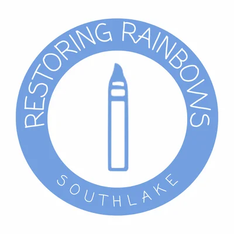
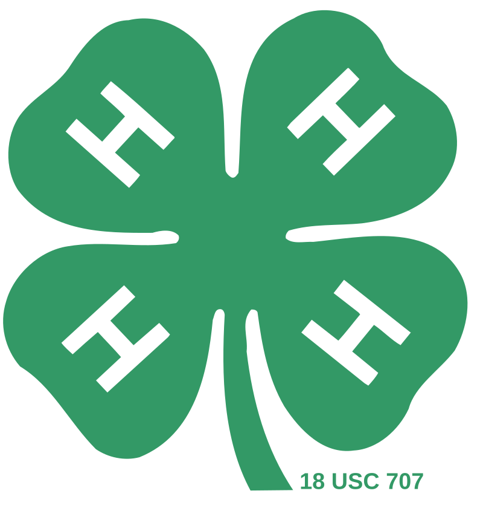

Vidhan Desai
Rising Senior at Ardrey Kell High School
About Me
I am a rising senior at Ardrey Kell High School in North Carolina. I have a passion for both biology and computer science which is quite intriguing and leads me to many opportunities. I believe that it is curiosity and persistence that brings about meaningful change. My values are rooted in a desire to make a positive impact, whether through educating others or pushing the boundaries of what science and technology can achieve.
My journey in STEM has been shaped by a diverse range of experiences that span both biology and computer science. From conducting research on biophilic design in urban neighborhoods to earning recognition in geospatial technology competitions, I've cultivated a skill set that blends analytical thinking with creative problem-solving. Volunteering at Idea Lab Kids and Discovery Place Science has further enriched my understanding of how to engage others in the wonders of science, fueling my ambition to pursue a career at the intersection of these fields.
Activities
-

Web Developer at Restoring Rainbows for Southlake
Developing and maintaining websites for community initiatives.
-

4-H
Participating in youth development programs focused on leadership and community service.
-
Discovery Place Science
Volunteering to promote science education and interactive learning experiences.
-
 All Star Code
All Star Code
Engaging in coding programs to develop technical skills and entrepreneurship.
-
Technospire Chapter Founder
Establishing and leading a technology-focused student organization.
High School Courses
Freshman
- Honors Math 3
- Honors English 1
- Honors World History
- Visual Art: Beginner
- French 2
- Japanese 1
- AP Psychology
- Honors Biology
Sophomore
- Honors Pre-Calculus
- Honors English 2
- Honors World History
- Visual Art: Intermediate
- Honors French 3
- Japanese 2
- AP Computer Science Principles
- Honors Chemistry
Junior
- AP Research
- AP English Language
- Honors Visual Art: Proficient
- AP Calc AB
- AP Biology
- American History 1
- American History 2
- Statistical Methods 1
- Quantitative Literacy
Senior
- AP Calc BC
- AP English Literature and Composition
- AP Chemistry
- AP Computer Science A
- Honors Forensic Science
- Honors Economics and Personal Finance